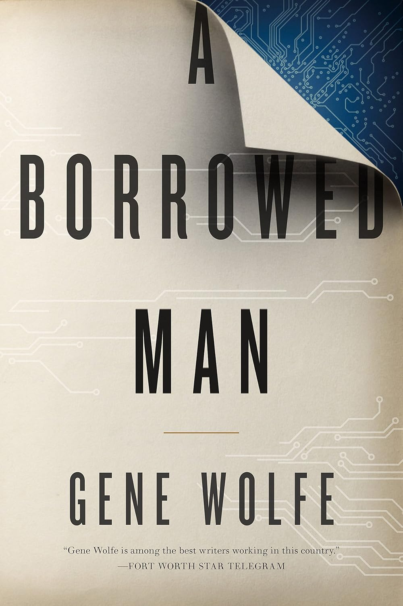

Jazz Club Book Club
Current Read - May 2026
A Borrowed Man
by Gene Wolfe
In the twenty-second century, our civilization has retained many familiar characteristics, but the population is smaller. Technology has made significant advances, and there are more robots—and clones. One such is E.A. Smithe, a borrowed person, a clone who lives on a third-tier shelf in a public library.
His personality is an uploaded recording of a deceased mystery writer. Smithe is library property, not a legal human. Borrowing him might help Colette Coldbrook find the connection between the deaths in her family and a physical copy of "Murder on Mars."
Length
300 pages
Rhythm
~10 pages / day
Previous Reads
